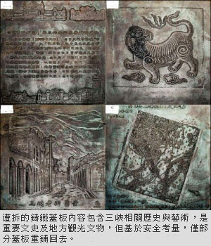
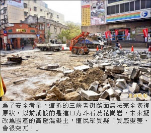

〈台北都會〉
三峽老街復舊 石板、蓋板回不去了
張安蕎｜自由時報／新北都會焦點｜2016年6月29日
行車安全優先考量 無法完全恢復原狀
爭議多時的三峽老街石板路及鑄鐵蓋板遭拆事件，雖副市長侯友宜曾到三峽與地方人士協商，指示以恢復原狀為原則，於十月底前完成復舊工程，但在各單位討論下，目前以行車安全為第一考量，無法「完全恢復原狀」，不僅路面材質將改為高壓混凝土，部分遭拆的蓋板也將改以豎立方式，展示在老街周邊範圍，不會重鋪回去。
在地方里長反映老街石板及蓋板易打滑、安全堪慮之下，區公所今年四月未與地方團體妥善溝通，貿然將路面拆除、改鋪柏油，引發外界撻伐。市長朱立倫第一時間承認錯誤，在城鄉局、民政局與民間團體單位協調下，已召開多次說明會，盼凝聚地方共識。
石板變高壓混凝土 遭質疑突兀難銜接
但為了安全考量，遭拆的路面無法完全恢復原狀，以前鋪設的是造價百萬的進口青斗石及花崗岩，未來擬改為國產的高壓混凝土，強調具止滑、易維護等效果，但日前說明會上，遭民眾質疑「質感變差、會很突兀！」擔憂無法與現有的老街銜接。
30塊鑄鐵蓋板 僅規劃重鋪回20塊
另外，遭拆的鑄鐵蓋板共有三十塊，也基於「面積太大、車子在上面摩擦力不夠」等因素，僅規劃重鋪回其中二十塊，其餘將改以裝置藝術方式，豎立在老街周邊景點。整起復舊工程還包括設立新的三峽老街入口意象，作為遊客拍照景點。
李梅樹紀念館表示，老街內的鑄鐵蓋板是具有連貫性的，尤其拆除的三十片，為老街意象圖最重要的部分，說明三峽一百年來的歷史文化、產業發展，蓋板不管是重鋪或豎立，都應顧及作品完整性，不要破壞了當初設計的原意。
本週開說明會 拚10月底復舊完畢
三峽文資守護聯盟召集人張光驊表示，會持續和市府協調路面材質的問題，雖然因安全問題，無法將全部的蓋板重鋪回去，但會要求市府將蓋板集中陳列、增加解說牌等，讓整起事件轉變成正面，對地方文化發揮效益。
三峽區長陳健民說，預計本週將召開第三次說明會，持續與各方加強溝通，凝聚共識後，就會展開工程發包作業，務必在十月底前復舊完畢。